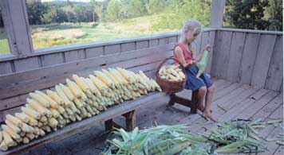
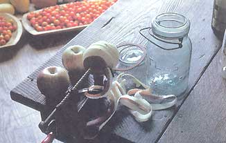
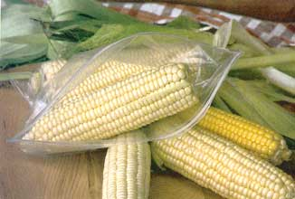
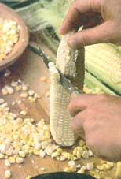

I want three things from my food: I want to know what's in it. I want rich, home-grown flavor. And I want to feel some measure of self-reliance. The global supermarket can't give me any of these things. Home food preservation can.
No factory worker can seal up the tender, sweet taste of fresh-from-the-garden corn better than you can. Commercially grown apples can never offer anything like applesauce made from Grandma's June apples. Store-bought pasta sauces will never give you the peace of mind and sense of satisfaction you get from making your own sauce with pesticide- and herbicide-free, organic tomatoes.
Home food preservation is about flavor, quality and purity. It also can be about economics and getting the most out of your garden. Most gardens easily produce more than a family can eat fresh: Even one cherry tomato plant can be hard to keep up with. Preserving the surplus allows you to enjoy the benefits of your summer's labor over a whole year.
Even if you don't have garden surplus, buying and preserving produce from a farmer's market or from a neighbor will save money. Top-quality frozen or canned vegetables often cost more than a dollar a pound, and organically grown frozen produce can be close to $4 a pound.
Besides, food preservation is fun. The work lends itself well to collective efforts, so it is a good opportunity to enlist the kids or have a work party with friends or family. There is nothing difficult about the process, just a series of little jobs. With a few helpers you can set up an assembly line and enjoy a day of conversation and company while the larder gets stocked for winter.
The first thing you need is fresh produce. If your own garden isn't big enough to grow extra, check out nearby pick-your-own farms or bulk buying from a local grower. Bulk prices at produce stands and farmer's markets are usually very reasonable, as well. Growers may have tomatoes too ripe for shipping they'll sell for very little, and orchards do the same with windfall apples.
Once you have a source for produce, you're ready to go. You'll just need to decide on what preservation method will work best for you.
Canned foods are convenient to use and won't be ruined by prolonged power outages. Stored carefully in a cool, dry, dark place, they can last for up to five years.
Equipment needs are minimal for boiling water-bath canning, the method suitable for acidic foods such as tomatoes, apples and products made with vinegar. You need canning jars, which come with two-piece lids; a metal screw-on band and a flat metal lid. The screw bands are reusable but the flat lid can be used reliably only once. Recycled jars often are not as heat-resistant as canning jars and may crack during processing. Their lids can't be counted on to seal.
You'll also need a big canning kettle with a rack to hold the jars off the bottom. Any kettle can be used, but it must be deep enough to allow the jars to be covered by 2 inches of water, plus space for the water to boil. Other useful items are: a nonreactive (not aluminum), 2- or 3-gallon stockpot for cooking down sauces; a wide-mouth funnel for filling jars; a ladle; a timer; and a jar lifter.
Freezing food is much quicker than canning, and preserves more nutrients and fresh flavor. However, you must have a freezer that maintains a temperature of zero degrees, and even then the storage life of fruits and vegetables is limited to a year or less.
Freezer packaging needs to be moisture and vapor proof, and have a good seal. Reusable plastic containers with lids that snap on or resealable freezer bags work well. Label and date your food when you prepare it for the freezer, so you'll know what is what and when to use it.
Drying, or dehydrating, is often thought of as a novelty rather than a serious method of food preservation, but dried fruits and vegetables are far more versatile and delicious than might be expected. Dried foods will keep for years theoretically, but in my house they go quickly because they taste so great. They're easy to use and their concentrated flavor is especially welcome in winter when fresh produce is limited.
Although the drying process takes time, preparing food for the dryer is quick, and not much attention is needed after the initial prep work. If your harvest corresponds with clear, hot days with low humidity, you can dry food outdoors in the sun. You will need drying trays (these can be simple wooden frames with cheese cloth or plastic win dow screening stapled across them) and a means of elevating the trays so air can circulate above and below the food. A well-ventilated location in full sun is essential; I have good results placing trays on a southfacing tin roof. The drying process takes about two days.
If the weather is less than ideal, an electric dehydrator that has both a thermostat and a fan will give you better results. Without the fan, foods with a high moisture content, such as tomatoes, easily can mold before they dry. You can even use an oven for small-scale drying. The oven should be set at 120 to 140 degrees (use an oven thermometer to keep tabs) and the door should be open 1 inch for an electric oven and 6 inches for a gas one (to account for different temperature-management systems). Check the drying food every hour or two for about eight hours.
The flavor of garden-grown tomatoes is essential to great-tasting sauces and soups. For best results, always choose firm, fully ripe (but not overripe) tomatoes. The fruit should be garden-fresh and at the best stage for eating.
Paste tomatoes, such as 'Early Cascade,' 'Roma,' `San Remo' and 'Viva Italia,' are ideal for most uses, but slicing tomatoes are better for juice. Tomatoes are the easiest garden vegetable to preserve by canning, and one of the handiest canned goods to have in the pantry. Homemade salsa and ketchup are fun to make and taste brighter and fresher than store-bought (see recipes below).
Begin by getting out all the equipment and utensils you'll need, including jars, and washing everything in hot, soapy water. Rinse the jars, but leave them filled with hot water. Cover the screw-lids with boiling water and leave them until needed.
CANNING TOMATOES
To remove the skins, dip washed tomatoes in a pot of boiling water for 30 seconds. Cool in ice water and drain in a colander. The skin should peel off easily. Cut out the core and they're ready to go.
Place tomatoes directly into empty jars, whole, halved or sliced. Press down gently to fill all the spaces. Fill the jars, leaving a half-inch of space below the rim. Add 1 teaspoon sea salt or pickling salt to each quart if you like.
Run a knife or chopstick around the inside of the jar to release air bubbles. This is an important step because trapped air bubbles can cause the jar to shatter as it heats. Clean the rim of the jar and put on the lid.
Place the filled jars on the rack in the canning kettle and pour hot water over them until the tops of the jars are covered by two inches of water.
Cover the kettle and bring the water to a boil. Continue boiling the jars: 35 minutes for pints or 45 minutes for quarts.
When the time is up, remove the jars from the kettle with a jar lifter and set them on a dish towel in a draft-free place to cool for 12 hours.
Remove the bands and check to see that the lid has sealed properly. If the center of the lid is indented, the jar is ready to label and store. If not, refrigerate it for immediate use.
You also can heat the peeled tomatoes in their own juice, stirring until they come to a boil. Then ladle the hot tomatoes and juice into jars and adjust the lids. Process in a boiling-water bath 10 minutes, for either pints or quarts.
In addition to canning tomatoes, you can put simmered tomatoes through a food mill (or use a blender if you don't mind the seeds) to make juice or puree. The puree can be simmered another two or three hours to make a concentrated sauce.
FREEZING TOMATOES
Canning tomatoes is easy, but freezing them is convenient if you're short on time. Frozen tomatoes retain their flavor but not their texture. Still, they're fine for soups and slow-cooked sauces. I usually peel and slice tomatoes before freezing. Another option is to cook the tomatoes with onions and peppers and any other ingredients you might want. Pack cooled tomatoes or sauce into freezer containers, leaving 1 inch of space for expansion. Juice and puree also freeze very well, but salsa is better canned.
DRYING TOMATOES
Drying has become my favorite way to preserve tomatoes. Dried cherry tomatoes are a special treat because the combination of acid and sugar content results in a burst of flavor. `Sungold' and `Sweet 100 Plus' are wonderful, sweet and prolific varieties. `Camp Joy' and `Red Pear' have more traditional tomato flavor and are also good for drying.
Paste, or plum, tomatoes have a lower moisture content than other tomatoes, so they yield more product after drying. 'Roma,' `San Remo,' and `Viva Italia' yield well and taste good, too. Whatever toma to you choose, be sure they're perfectly ripe, firm and flavorful. Drying intensifies but does not improve flavor.
Cherry tomatoes can be cut in half and arranged skin-side down on the drying trays. Small plum tomatoes can be cut in half lengthwise, but larger ones should be cut in one-quarter to half-inch slices. Gently squeeze out the seeds before placing the pieces on the trays.
Dry the tomatoes in the sun, or in a dehydrator or oven set to 135 to 140 degrees. Check every four to six hours, then every two to three hours, removing those that have dried as you go.
When dry, plum tomatoes will be pliable and leathery, but may still retain enough moisture to mold, so store them in the freezer. Tomatoes that are dried enough to be crisp may be stored in a glass jar in the pantry.
Dried tomatoes have multiple uses. I like to toss them into soups, sauces, pasta dishes and pilaf. Chopped into pieces, they give a flavor boost to risotto, polenta, muffins and breads. Reconstitute them by soaking briefly in warm water before using them on pizza, or in salsa or pesto.
Crisp-dried tomatoes can be ground to a powder in the blender for seasoning vegetable dishes, soups and sauces.
The best-keeping apples are late-ripening varieties, such as 'Winesap,' `Northern Spy,' `Yellow Newton','Jonathan,' 'Cortland' and `Delicious.' Hard, perfect fruit can be wrapped in paper individually and stored in boxes or crates in a root cellar or cool basement. At the ideal temperature of 32 degrees and 80 to 90 percent humidity, they have an average storage life of four to six months.
To extend the apple-eating season and have ready-to-eat apple products on hand all year, you will want to can, freeze or dry a good part of your harvest. This is especially true if you have access to great pie and sauce apples, which generally are not good keepers.
Apples can be preserved as cider, sauce, slices for pie, apple butter, dried rings or leather.
CANNING APPLES
When canning apple slices for desserts, plan on using three medium apples for each 1-quart jar. Slices may be canned in a thin sugar syrup, apple juice or water, according to your taste. Syrup is made by boiling 2 cups of water and adding 1 cup of sugar until dissolved. You will need about 2 cups of liquid for each quart jar. Peel, core and slice your clean apples.
Apples oxidize quickly in the air, so it's a good idea to put the pieces in an antioxidant solution as you work. The most effective is to dissolve a teaspoon of ascorbic acid (or 3,000 milligrams of vitamin C) in a gallon of water. You may also use the juice of three or four lemons in the gallon of water. Leave the slices in the solution until you are ready to process them, then drain and pack them into hot, clean jars. Pour boiling liquid over the apples, filling the jars to within 1 inch of the rim. Wipe the rims, secure the lids and process the jars in a boiling-water bath for 20 minutes.
For applesauce, I like to use early-ripening apples, which are more acidic and cook down easily. Less acidic apples make a delicious, chunkier sauce. Some recommended sauce varieties include: `Rhode Island Greening,' `Pippen,' 'McIntosh,' `Grimes Golden,' 'Cortland,' `Gravenstein' and `Bramley's Seedling.' One bushel of apples yields between 16 and 20 quarts of applesauce.
MAKING APPLESAUCE IS SIMPLE
Wash, peel, quarter and core the apples, placing pieces in an ascorbic acid solution until you're ready to cook them.
Put the apples in a kettle, adding about a cup of apple juice or water for every 5 or 6 pounds of apples. Simmer, stirring frequently until they become sauce.
Add more liquid if needed. You can add sugar or lemon juice to adjust the flavor. Ladle the simmering sauce into hot, clean canning jars, leaving a half-inch of head space. Put on the lids and process in a boiling water bath for 20 minutes.
FREEZING APPLES
Prepare apple slices for freezing as you would for canning, but use a much stronger antioxidant solution (1 teaspoon ascorbic acid dissolved in 1 cup water) to coat the apples as you work. Or you can use a table salt or lemonwater solution and then blanch in boiling water for one minute.
Drain the apples and spread them in a single layer on cookie sheets. Place the sheets in the freezer, and when apples are frozen - an hour or so - pack them into freezer bags, removing as much air as possible. Seal and return to the freezer.
Freezing is a great way to preserve the flavor of apple cider and applesauce. Refrigerate the cider overnight to allow sediment to settle to the bottom, then pour the clear juice into plastic jugs or freezer containers, leaving adequate room for expansion.
Cooled applesauce may be packed in freezer bags or rigid containers with 1 inch head space. Seal, label and freeze.
DRYING APPLES
Dried apples are a sweet, tart snack and ingredient for baked goods, or they may be reconstituted for use in other recipes. Firm, tart apple varieties make the best dried apples. Look for `Arkansas Black,' `Gala,' 'Mutsu, `Golden Russet,' `Idared,' Jonagold, `Grimes Golden' or `Winesap,' among others.
Wash, peel, core and slice the apples about 1/4-inch thick, then coat them with a strong antioxidant solution (see freezing instructions above). If you are using an electric dehydrator, arrange the slices in a single layer and dry them at 115 degrees for about eight hours. Turn the fruit once or twice and rotate the shelves if necessary. If you're drying outdoors and insects are likely to be a problem cover the slices with cheesecloth. Turn the fruit every few hours to expose all surfaces.
Be sure to bring the trays in at night. Depending on the weather; you should have chewy dried slices it two or three days, which keep best in the refrigerator or freezer. If you want to store them in a jar on the pantry shelf, dry them a little longer so they are no longer tacky.
To reconstitute dried apples, soak in warm water or apple juice until they soften. Add a squeeze of lemon if you like.
Sweet corn makes great summer eating, and it can make some of the best win ter eating, too. Corn can be canned, but it requires a lot of time in a pressure canner (it's not acidic enough to be canned in a water-bath canner), so I prefer to freeze and dry my crop for storage.
FREEZING CORN
To prepare corn for the freezer, first husk, desilk and wash the ears. The next step is blanching - a partial cooking in boiling water to stop the action of enzymes. Put the whole ears in a large pot of boiling water and allow them to boil for three to four minutes, depending on the size of the ear. Cool them immediately in ice water and drain well. Cut the kernels from the cob. The sooner the corn is frozen after removal from the cob, the better.
If practical, spread the corn in a thin layer on baking sheets and allow it to freeze solid before packing into freezer containers or bags. Always remove as much air as possible before sealing. Return to the freezer.
Corn can also be frozen on the cob, which saves time but not space. Blanch the ears seven minutes, cool and drain. Wrap the ears well in freezer wrap and freeze.
Some folks freeze corn in the husk without blanching. Pull out the silk and remove the outer layers of husk, then pack the ears in plastic bags and freeze. Plan to eat this corn within a few months for best results.
DRYING CORN
Dried sweet corn has a unique, intense flavor and interesting texture when reconstituted and used in cooking. I dry more corn each year as I find additional delicious ways to use it. I grow an open-pollinated variety, `Rainbow Inca,' for drying because it has more corn flavor than modern, extra sweet varieties.
Prepare the corn as you would for freezing: Boil it on the cob for three to four minutes, or steam it for about 10. Cool and cut the kernels from the cob. Spread the kernels on drying trays or baking sheets.
Dry in the oven or dehydrator at 140 degrees for one hour, then gradually raise the temperature to 165 degrees, stir ring the kernels occasionally to keep them separated. Keep the temperature at 165 degrees for one hour, then reduce it to 140 degrees until the kernels are completely dry.
If the weather is hot and dry, corn dries well in the sun. For better long-term storage, heat dried corn in an oven set at 175 degrees for 10 minutes. Store brittle-dry corn in a glass jar in the pantry, and chewy-dry corn in the refrigerator or freezer.
Traditionally, dried corn was made by roasting over hot coals for about 25 minutes. I use a charcoal grill with the lid down. Rotate the ears so they cook even ly. Cool, husk and hang the ears in the sun, or place them on racks in a dehydrator. When dry, rub the kernels off the cobs and store in a glass jar. Dried corn may be added to soups and casseroles as is, or reconstituted in water before using in other dishes. Try it as filling for enchiladas or burritos, or in mixtures for stuffed vegetables.
For information on preserving other fresh produce, we recommend Keeping the Harvest: Preserving Your Fruits, Vegetables and Herbs by Nancy Chioffi and Gretchen Mead.
|
 DAVID CAVAGNARO You can savor summer's harvest all year long with a few easy food preservation methods: freezing, drying and canning. |
 DAVID CAVAGNARO This old-time apple peeler really works. Order at www.lehmans.com. |
 DAVID CAVAGNARO Sweet corn is one of the easiest garden crops to put by for the future. |
|
 DAVID CAVAGNARO Sweet corn freezes beautifully. |
|
|